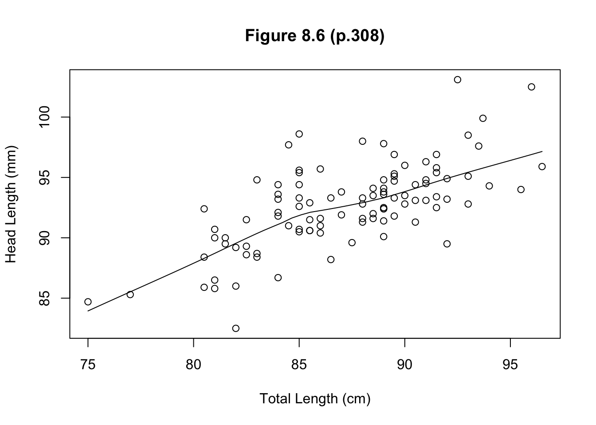
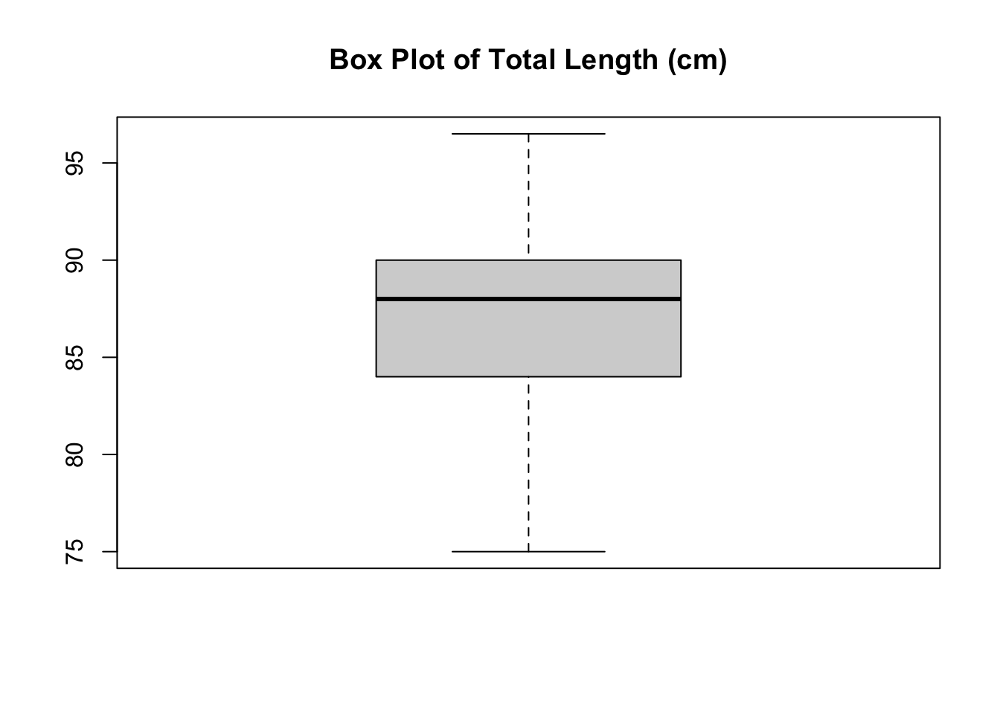
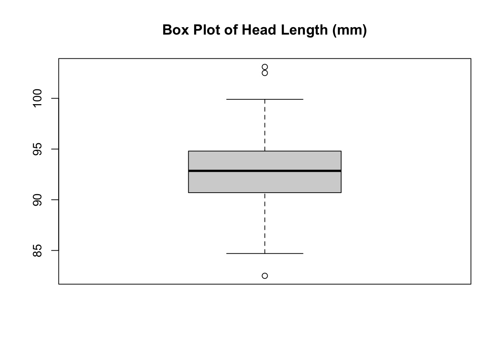
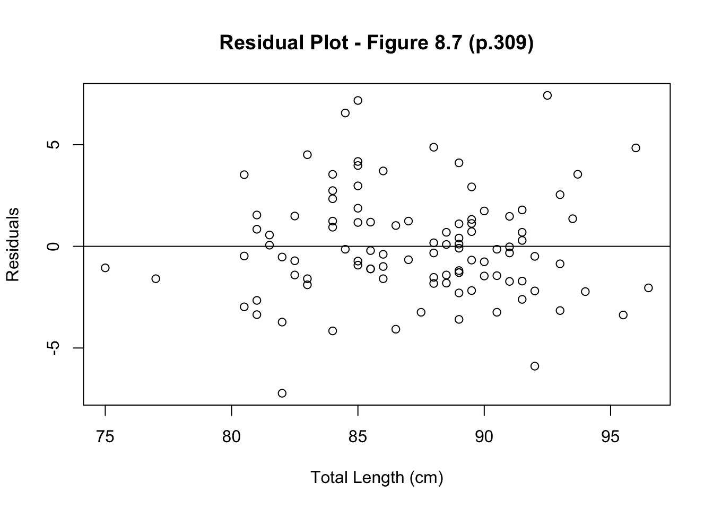
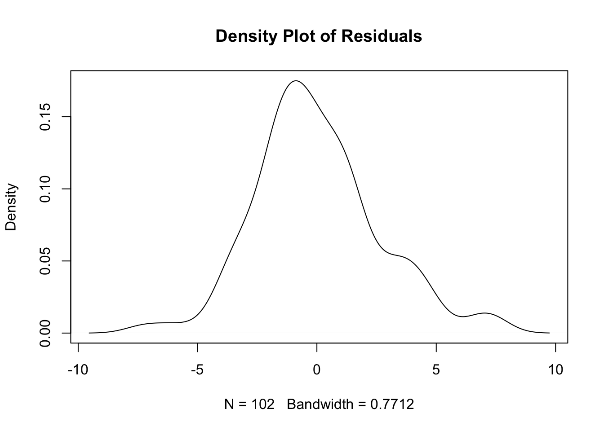

4 Data Set: possum
4.1 Data Description
https://www.openintro.org/data/index.php?data=possum
4.1.1 Background
Data representing possums in Australia and New Guinea. This is a copy of the data set by the same name in the DAAG package, however, the data set included here includes fewer variables.
4.1.2 Variables
pop - Population, either Vic (Victoria) or other (New South Wales or Queensland).
sex - Gender, either m (male) or f (female).
age - Age.
head_l - Head length, in mm.
skull_w - Skull width, in mm.
total_l - Total length, in cm.
tail_l - Tail length, in cm.
4.2 Input Data
4.2.1 csv File
Remark How to get a file path on a Mac?
Right-click the file
Click Get Info
4.3 Data Cleaning
4.3.1 Remove Missing Values
4.4 Correlation
Calculate the correlation coefficient between x (total_l) and y (head_l).
## [1] 0.67428924.5 Graphical Analysis
4.5.1 Scatter Plot
Make a scatterplot for x (total_l) and y (head_l).
scatter.smooth(x = x, y = y,
xlab = "Total Length (cm)",
ylab = "Head Length (mm)",
main = "Figure 8.6 (p.308)") 
4.5.2 Box Plot: Check for Outliers
Make box plots for x (total_l) and y (head_l), respectively.


4.6 Linear Regression
4.6.1 Model
Fit the least squares regression
\[\begin{align} head_l = \beta_0 + \beta_1 total_l + e. \end{align}\]
##
## Call:
## lm(formula = head_l ~ total_l, data = possum_new)
##
## Residuals:
## Min 1Q Median 3Q Max
## -7.226 -1.593 -0.326 1.303 7.424
##
## Coefficients:
## Estimate Std. Error t value Pr(>|t|)
## (Intercept) 43.25900 5.41959 7.982 2.49e-12 ***
## total_l 0.56667 0.06206 9.131 7.95e-15 ***
## ---
## Signif. codes: 0 '***' 0.001 '**' 0.01 '*' 0.05 '.' 0.1 ' ' 1
##
## Residual standard error: 2.618 on 100 degrees of freedom
## Multiple R-squared: 0.4547, Adjusted R-squared: 0.4492
## F-statistic: 83.37 on 1 and 100 DF, p-value: 7.946e-15We have
\[\begin{align} \hat{\beta}_0 & = 43.25900 \\ \hat{\beta}_1 & = 0.56667. \end{align}\]
4.6.2 Residual Analysis
Make a scatterplot and a residual plot for regression. Discuss whether fitting a linear model would be appropriate.
# scatterplot
scatter.smooth(x = x, y = y,
xlab = "Total Length (cm)",
ylab = "Head Length (mm)",
main = "Scatterplot - Figure 8.6 (p.308)") 
# residual plot
plot(x = possum_new$total_l, y = fit$residuals,
xlab = "Total Length (cm)",
ylab = "Residuals",
main = "Residual Plot - Figure 8.7 (p.309)")
abline(h=0)

Check the following conditions:
Linearity: linear trend, i.e., no patterns in residual plot. (valid)
Normal residuals: no extremely large or small residuals. (valid)
Constant variability: points around line dispersed in similar way. (valid)
Independent observations: occurrence of one observation provides no information about occurence of the other. (valid)
Thus, fitting a linear model would be appropriate for this case.